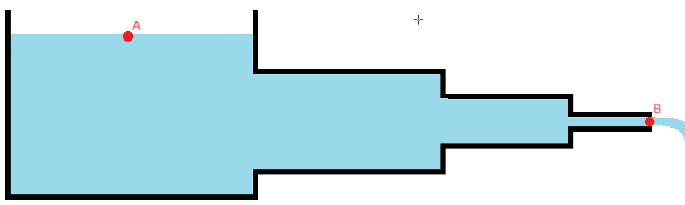

Ejercicios: Tuberías en Serie
Responde las preguntas en los cuadros de texto. Si tu respuesta es correcta, verás la retroalimentación con el proceso completo.
Ejercicio 1
Para el sistema mostrado en la figura fluye agua a °F por una tuberia de hierro ductil revestida cuyos diametros son , y pulgadas, con longitud igual a , y pies, respectivamente. Se sabe que el caudal es de gal/min. Determine la diferencia de altura entre los puntos A y B. Las contracciones son súbitas.

Ejercicio 2
Para el sistema mostrado, fluye agua a 70°F por tres tramos de tubería de hierro dúctil revestida de diámetros 3", 4" y 6", con longitudes 65, 110 y 185 ft, respectivamente. El caudal es 240.8 gal/min.
Ejercicio 3
Dos tuberías iguales en serie tienen pérdidas h_each = 4 m cada una. ¿Cuál es la pérdida total?